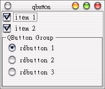

| QCheckBox與QRadioButton都是繼承自QButton類別，QCheckBox可以製作我們常稱的可複選「核取方塊」，而QRadioButton則可以製作我們常稱的「單選鈕」，這邊先簡單說明它們的配置方式。 請編譯主函式main.cpp：
#include <qapplication.h> 由於只是配置元件，程式本身並不難，注意到我們在開頭include了哪些必要的定義檔； 我們使用QVBox版面配置來一個一個由上往下加入元件，以下說明大致的配置方式。 以下這段應該沒有問題，我們加入了兩個QCheckBox至QVBox物件box中，其中第一個QCheckBox的選取狀態使用setChecked()設定為true： QCheckBox *checkbox = new QCheckBox(box);
checkbox->setChecked(true); checkbox->setText("item 1"); checkbox = new QCheckBox("item 2", box); 如果我們將QButtonGroup直接加入QVBox中，則這幾個單選鈕將會各自獨立而沒有互斥性，這就失去單選鈕的作用了，我們必須使 用QButtonGroup來劃定單選鈕的互斥範圍，在同一個QButtonGroup中的單選鈕同時間只能有一個被選取，QButtonGroup也是 一個Widget元件，所以我們可以直接將之置入QVBox中： QButtonGroup *group = new
QButtonGroup(1, QGroupBox::Horizontal, "QButton Group", box); QRadioButton *radiobutton = new QRadioButton("rdbutton 1", group); radiobutton = new QRadioButton("rdbutton 2", group); radiobutton = new QRadioButton("rdbutton 3", group); 這邊只簡單的介紹一些基本的配置，關於QCheckBox與QRadioButton的其它方法，請參考Qt的線上說明手冊。 以下是執行的畫面：  |